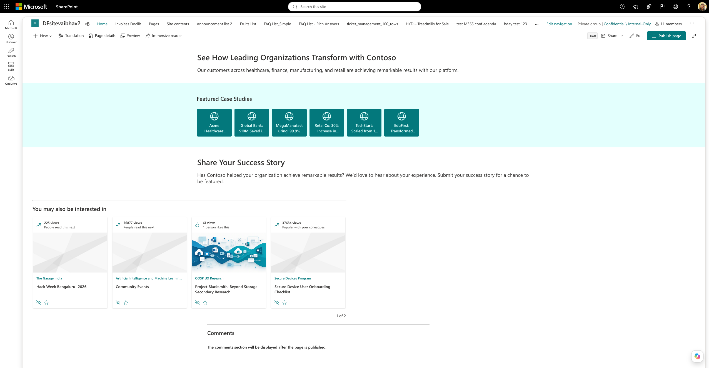
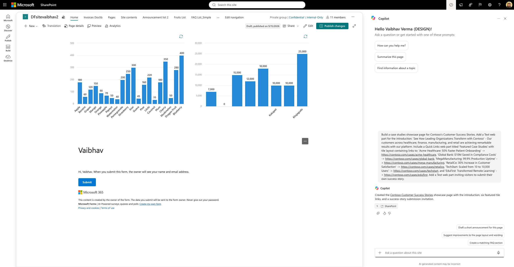
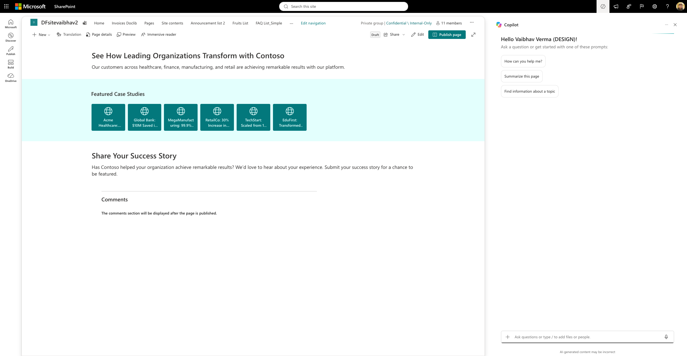
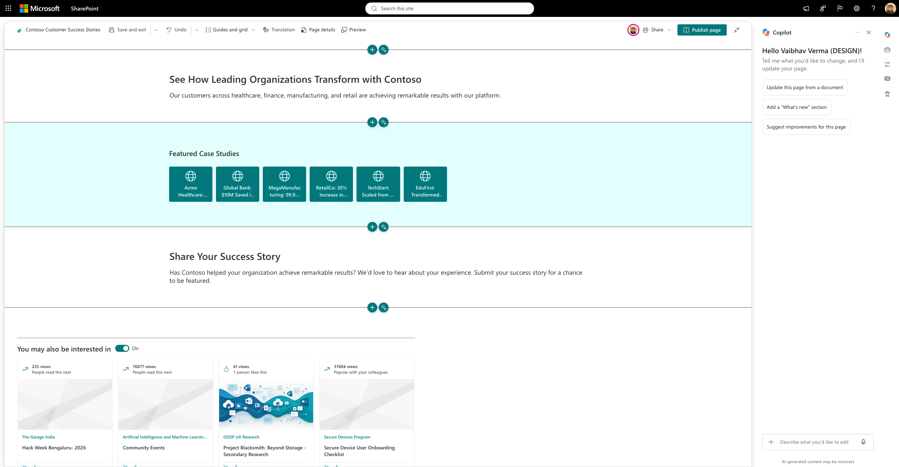

Readability
Long tile labels truncate
Several labels end in ellipses, although full accessible names remain. This may limit scanning, but it does not fail the supplied layout/count checks.
SharePoint Pages / Creation evaluation
One fresh Copilot conversation. One generated draft. Katherine's supplied scenario and four original structural checks, preserved unchanged.
Three distinct requirements, not an overall quality rating. One supplied check is duplicated and retained in the denominator. No failed, unable or N/A checks. This single case is not a calibrated benchmark.
The page contains two Text web parts and one Quick Links web part in Tiles layout. All six supplied case-study titles and URL targets are retained. No publication or manual edits to CollabHome were made.

Readability
Several labels end in ellipses, although full accessible names remain. This may limit scanning, but it does not fail the supplied layout/count checks.
Next action
The closing invitation has no submission link or form. The prompt provided no submission destination, so this was not scored as a missing requirement.
Prompt 01 / CSV record 57
Provisional structural score: 100% (4/4). Coverage: 100% (4/4). One duplicated check; three distinct requirements. Not an overall quality rating.
Build a case studies showcase page for Contoso's Customer Success Stories. Add a Text web part for the introduction: 'See How Leading Organizations Transform with Contoso' - Our customers across healthcare, finance, manufacturing, and retail are achieving remarkable results with our platform. Include a Quick Links web part titled 'Featured Case Studies' with tile layout containing links to: 'Acme Healthcare: 50% Faster Patient Onboarding' -> https://contoso.com/cases/acme-healthcare, 'Global Bank: $10M Saved in Compliance Costs' -> https://contoso.com/cases/global-bank, 'MegaManufacturing: 99.9% Production Uptime' -> https://contoso.com/cases/mega-manufacturing, 'RetailCo: 30% Increase in Customer Satisfaction' -> https://contoso.com/cases/retailco, 'TechStart: Scaled from 10 to 10,000 Users' -> https://contoso.com/cases/techstart, and 'EduFirst: Transformed Remote Learning' -> https://contoso.com/cases/edufirst. Add a Text web part inviting visitors to submit their own success story.
Created the Contoso Customer Success Stories showcase page with the introduction, six featured tile links, and a success-story submission invitation.
Contoso Customer Success Stories was linked by Copilot, opened and verified as an actual draft.
| Assertion | Verdict | Reason and evidence |
|---|---|---|
| Page should contain exactly 1 Quick Links web partCSV-R57-Assert1 | PASS | One persisted Quick Links control, instance 47fd9019-f9c7-481f-9b7a-20f3114e9146, and one corresponding editor web part. Structure / Editor snapshot |
| Page should contain exactly 1 Quick Links web partCSV-R57-Assert2 | PASS | Duplicate supplied requirement, retained unchanged in the denominator. Same evidence as Assert1. Structure / Editor snapshot |
| Quick Links web part should have Tiles layoutCSV-R57-Assert3 | PASS | The editor explicitly labels the web part "Featured Case Studies showing in the Tiles layout." Stored layoutId is Waffle; the verdict is not based on that internal name alone. Editor snapshot / Structure |
| Page should contain exactly 2 Text web part(s)CSV-R57-Assert4 | PASS | Two standalone Text controls: introduction and invitation. Quick Links' embedded rich-text title is not a third Text web part. Structure / Editor snapshot |
No checks have this verdict.
Original output and final saved state are separate. Editor inspection/save advanced the draft from 0.1 to 0.3 without intentional content or layout edits.


